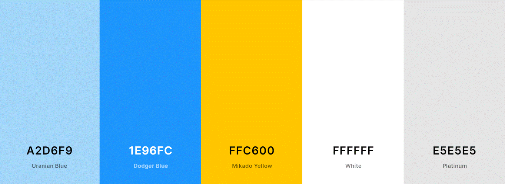

Color Scheme
Those colors are the perfect harmony in the page because involves a cold and a sunny weather, the blue represents the cold, and the yellow the warm. They have a good mix with secondary colors as gray, and white. I love the colors, because represent the site by itself due are very common colors in the nature.